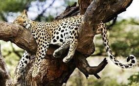
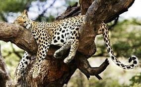
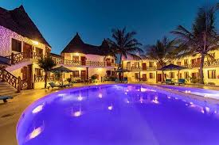
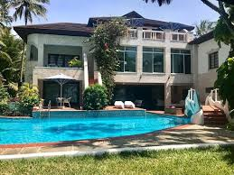
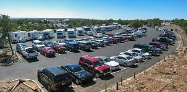
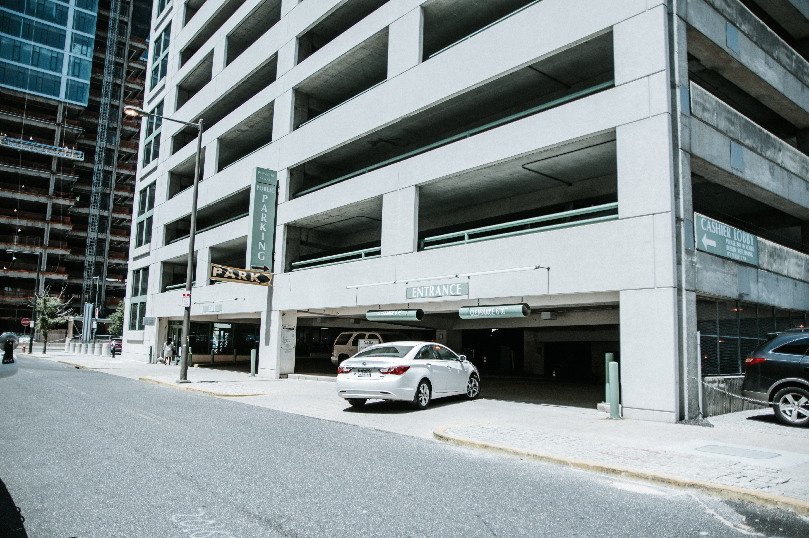

NAIROBI NATIONAL PARK

 

Nairobi National Park is Located in the Heart of Nairobi City, Kenya. It is one of the best National Parks in Afrika.The Park not only redfines the modern sports facility architecture but also serves as the catalyst and cornerstone of the Kenya's Capital Nairobi.
Information Guide
Nairobi National Park is Located along Mombasa Road 5miles from Jomo Kenyatta International Airport. The following are point of Contacts:
- Manager: Timothy Roberts
- Ass. Manager: Robert Serembe
For direction click Map of Nairobi National Park
Upcoming Events:- May-June-July -2023
- Free Entrances Inside the Park:
- Free Parking
- Bus Tours at Discounted Price
- Nairobi National Park Free Tshirts
- Food Sold Inside the Park will be Tax free
Accomodations
There are so many Luxury Hotels Located Near Nairobi National Park. Guest rooms offer a blend of Victorian elegance and comfort, combined with all the practical, amenities of the modern age. The hotel offers an eclectic mix of dining options, from delectable Thai specialties, an Al fresco dinner with a city view, to an open air bistro café. The bar, with a refined ambiance, set in early 19th century décor, creates an elegant environment ideal for consuming any brew.
 Raised on stilts, the restaurant offers breathtaking views of the lush gardens and the Ewaso Nyiro River. The bar is located along the river bank with natural spring water channels where guests can unwind. The swimming pool offers a relaxing spot, further enhanced with an elaborate pool bar that serves refreshing fresh juices, a variety of cocktails, beers and light beverages. Relax and unwind at the spa while listening to the trickling natural streams and sounds of the African jungle. Nairobi National Park is the place to visit
Parking and Transportations
Nairobi Park Garage is Located East of the The main Entrance
That is where you can also find Our Tour Buses
 
Guest Conduct Policy
Our Tour Guides are friendly, outgoing and helpful, and they will do their very best to make your TOUR as enjoyable as possible. Please do not misinterpret their friendliness. Tour Guides are prohibited from engaging in physical relationships with guests. Tour Guides are not permitted to socialize with guests beyond their professional duties, and are not permitted to be in guest staterooms, except for the performance of their shipboard duties. Guests are expected to respect these policies and are similarly prohibited from engaging in physical relationships with Tour Guides. Guests are not permitted in any restricted
Gate Opening Times
Gates are open Monday to Friday 9:00AM-4:00PM and Saturday and Sunday gates open 10:00AM to 5:00PM
SAFETY AND SECURITY
Safety and security are everyone's responsibility. Should anyone become aware of unsafe or possibly illegal behavior during your tour, they should immediately report this to the Security Staff or report to management. This may be done through Office telephone system by dialing 999 or by seeking the assistance of a Tour Guide.
DO NOT FEED ANIMALS IN THE PARK. FOLLOW THE TOUR GUIDE INSTRUCTIONS AT ALL TIMES